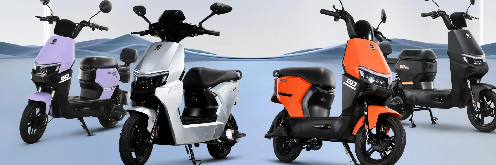

Distributor resmi GODA di Palmerah
Motor listrik GODA, mulai 3 jutaan.
Ada 13 model, dari motor harian yang irit sampai yang kencang. Coba gratis dulu di showroom kami di Palmerah.

5,0 dari 440 ulasan Google Seberang Bank BRI Palmerah
Lihat katalog & pricelist lengkap Lihat katalog & pricelist lengkap